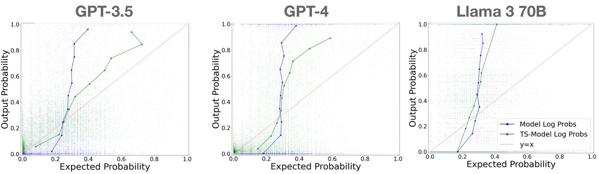
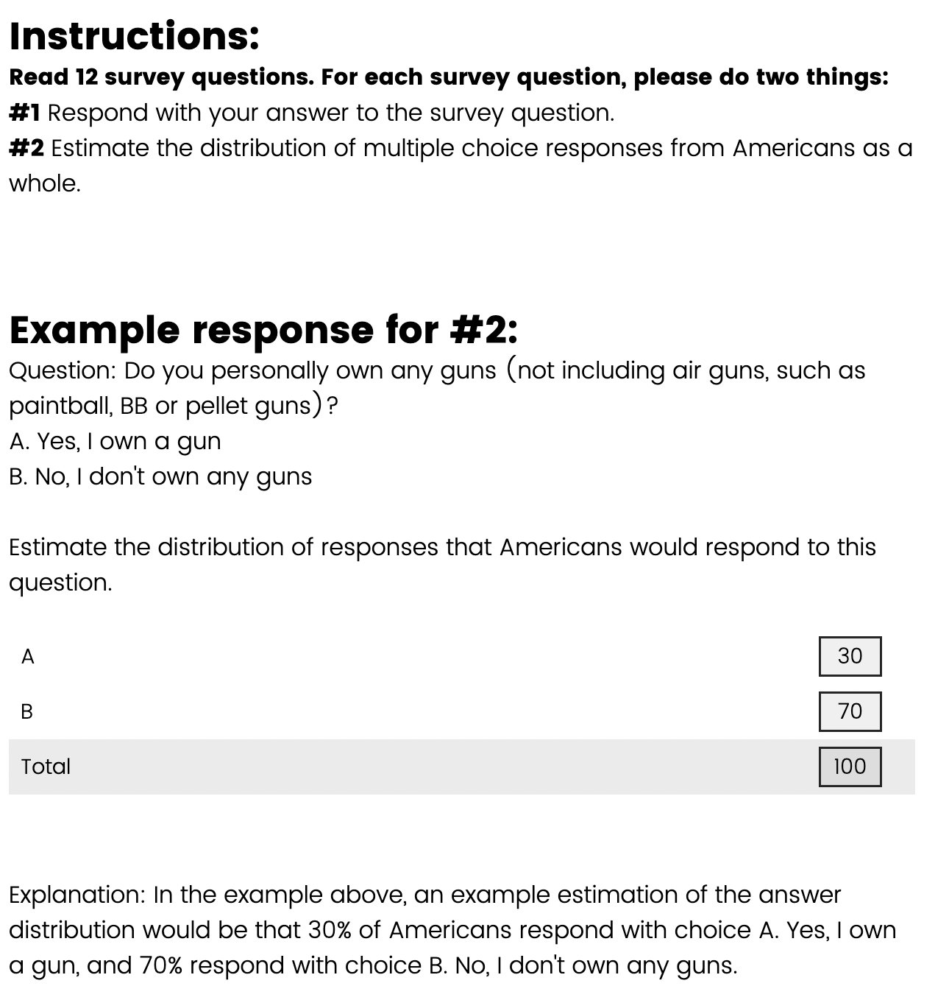
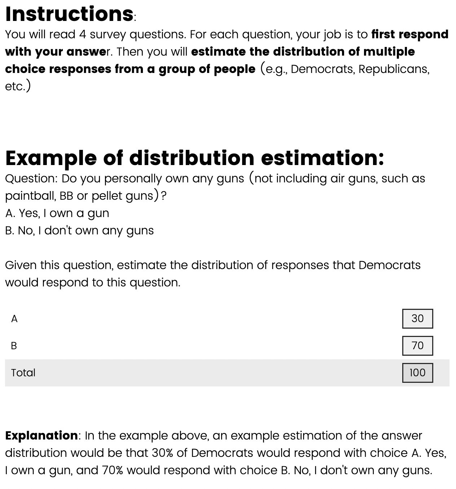
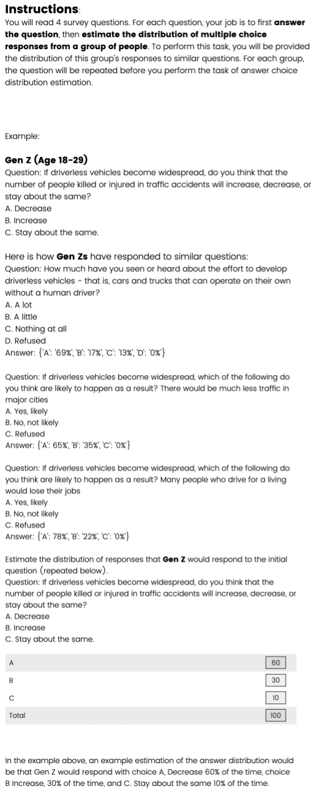

Benchmarking Distributional Alignment of Large Language Models
Language models (LMs) are increasingly used as simulacra for people, yet their ability to match the distribution of views of a specific demographic group and be distributionally aligned remains uncertain. This notion of distributional alignment is complex, as there is significant variation in the types of attributes that are simulated. Prior works have underexplored the role of three critical variables—the question domain, steering method, and distribution expression method—which motivates our contribution of a benchmark explicitly addressing these dimensions. We construct a dataset expanding beyond political values, create human baselines for this task, and evaluate the extent to which an LM can align with a particular group’s opinion distribution to inform design choices of such simulation systems. Our analysis reveals open problems regarding if, and how, LMs can be used to simulate humans, and that LLMs can more accurately describe the opinion distribution than simulate such distributions.
It would be unusual to ask a person to accurately simulate a demographic group to which they do not belong. However, LMs are increasingly being used in this way to simulate human behavior in applications ranging from agent-based simulations (Park et al., 2023a) to piloting survey design (Hwang et al., 2023; Zhou et al., 2024; Aher et al., 2023; Ziems et al., 2024; Argyle et al., 2023). When simulating survey responses, there is no single “correct” answer, and it is important to evaluate if the distribution of model outputs is truly aligned with the intended human distribution. There has been considerable debate as to whether or not models can do this—some argue that the extensive training corpus of LLMs enables them to faithfully simulate demographic groups (Grossmann et al., 2023), while others show such simulations are inaccurate and stereotypical (Liu et al., 2024; Wang et al., 2024a).
让一个人准确模拟他并不属于的某个人口群体会显得不同寻常。然而，语言模型（LM）正越来越多地以这种方式被用于模拟人类行为，应用范围从基于智能体的仿真（Park 等, 2023a）到调查设计的试点（Hwang 等, 2023；Zhou 等, 2024；Aher 等, 2023；Ziems 等, 2024；Argyle 等, 2023）。在模拟调查回答时，并不存在唯一的「正确」答案，因此评估模型输出的分布是否真正与预期的人类分布相一致就十分重要。关于模型能否做到这一点存在大量争论：有人认为 LLM 庞大的训练语料使其能够忠实地模拟人口群体（Grossmann 等, 2023），也有人表明这类模拟并不准确且带有刻板印象（Liu 等, 2024；Wang 等, 2024a）。
One reason for these conflicting views is the heterogeneity in how one can measure distributional alignment, resulting in a lack of clarity around best practices. For example, current approaches have measured the model’s opinion distribution with zero-shot, log-probability based evaluations, yet recent work in uncertainty quantification suggests verbalized distributions can outperform model log-probabilities (Tian et al., 2023). This raises the question of whether the model’s distribution expression method is truly optimal and demonstrates a need for carefully controlled evaluations.
造成这些观点分歧的一个原因是，度量分布对齐的方式存在异质性，导致最佳实践缺乏清晰的界定。例如，现有方法以零样本、基于对数概率的方式度量模型的观点分布，而不确定性量化方面的近期工作则表明，言语化的分布可以优于模型对数概率（Tian 等, 2023）。这就引出一个问题：模型的分布表达方法是否真的最优，也说明需要开展严格受控的评测。
图 1：我们的工作研究数据集（黄色）、引导方法（绿色）与分布表达方法（紫色）上的变化如何影响分布对齐的质量。我们按与人口群体观点分布对齐的能力对模型和人类排序，发现现有的分布对齐度量方式（即模型对数概率）系统性地低估了 LM 的表现。尽管 LM 可能「知道」分布对齐，它们却难以从自身分布中采样。
In this work, we acknowledge the sensitivity of distributional alignment metrics and build a benchmark that studies several key variations in the distributional alignment task. Our benchmarks and dataset measure how the distributional alignment of LLMs vary under (1) the distribution expression method, (2) the steering method, and (3) design choices in the dataset (Fig. 1).
在本工作中，我们正视分布对齐指标的敏感性，并构建了一个基准来研究该任务中的若干关键变化。我们的基准与数据集度量 LLM 的分布对齐在以下方面如何变化：(1) 分布表达方法；(2) 引导方法；(3) 数据集的设计选择（图 1）。
Our analyses reveal several open problems for distributional alignment. First, we find that existing measurement methods such as log-probabilities have systematically underestimated the distributional alignment of LLMs, and other simple baselines result in better alignment. Second, we find that LMs can more accurately estimate opinion distributions in text-based forms (e.g., ‘return the distribution in a JSON’), compared to generating samples from the opinion distribution. This highlights a substantial opportunity to improve distributional alignment by closing the gap between a model’s knowledge of human opinions and its ability to simulate them. Finally, we find significant gaps in both alignment and steerability when simulating non-cultural opinions, such as book preferences, when compared to evaluations of stronger opinions (i.e., political and cultural values).
我们的分析揭示了分布对齐领域的若干开放性问题。首先，我们发现对数概率等现有度量方法系统性地低估了 LLM 的分布对齐，而其他简单基线反而带来更好的对齐。其次，我们发现 LM 以文本形式（例如「以 JSON 返回分布」）估计观点分布，比从该观点分布中生成样本更为准确。这凸显出一条重要的改进路径：弥合模型对人类观点的知识与它模拟这些观点能力之间的落差。最后，我们发现，与对更强观点（即政治与文化价值观）的评测相比，在模拟非文化类观点（例如图书偏好）时，对齐性与可引导性都存在显著差距。
We summarize our key contributions as follows:
我们把主要贡献概括如下：
We identify three key sources of variation in distributional alignment (the question, steering method, and distribution estimation method) and construct a benchmark systematically varying these dimensions.
1. 我们识别出分布对齐中三个关键的变化来源（问题、引导方法与分布估计方法），并构建了一个系统改变这些维度的基准。
We collect a new dataset, NYT Book Opinions, that expands measurements beyond political and cultural values.
2. 我们收集了一个新数据集 NYT Book Opinions，把度量范围拓展到政治与文化价值观之外。
Our analysis reveals several open problems for the field: (1) LMs may ‘know’ a distribution, but are unable to sample from it (2) Log-probability-based metrics for distributional alignment may systematically underestimate LM performance (3) Distributional alignment and steering beyond political and cultural values remains challenging.
3. 我们的分析揭示了该领域的若干开放性问题：(1) LM 可能「知道」某个分布，却无法从中采样；(2) 基于对数概率的分布对齐指标可能系统性低估 LM 的表现；(3) 政治与文化价值观之外的分布对齐与引导仍然困难。
We propose a benchmark that systematically evaluates the extent to which a language model can be aligned to the distribution of a particular demographic group’s opinions, a task we term the distributional alignment problem. To begin, we formalize this task and visualize it in Fig. 1.
我们提出一个基准，系统评估语言模型在多大程度上能与特定人口群体的观点分布相对齐，我们把这一任务称为分布对齐问题。首先，我们对这一任务做形式化，并在图 1 中加以可视化。
Let be a survey question to which respondents from group have an opinion distribution across multiple choices answers . The goal is to understand how a language model can represent a group through a steering method , one that shifts an LM’s opinion distribution to that of a particular group. Concretely, the model will express a distribution with a distribution expression method (e.g., model log-probabilities).
令 为一道调查问题，来自群体 的回答者对它在多个选项 上存在一个观点分布。目标是理解语言模型如何通过引导方法 来表征一个群体 ，该引导方法把 LM 的观点分布推向某一特定群体的分布。具体地，模型将用分布表达方法 （例如模型对数概率）来表达一个分布 。
We are interested in the distributional difference between the reference distribution, , and the model’s estimate, . To evaluate this, we construct a set11 1 This is not a matrix as each question can have a different number of answer choices. Thus, the dimensionality of depends on . of ground truth human opinion distributions, where , and a corresponding set of a model’s predicted distributions, where . We define distributional alignment as
我们关心参考分布 与模型估计 之间的分布差异。为评估这一点，我们构建一个集合11——由于每个问题 可以有不同数量的选项，这并非矩阵； 的维度取决于 。——包含真实的人类观点分布，其中 ；以及一个对应的集合 ，包含模型预测的分布，其中 。我们把分布对齐定义为
| (1) |
This metric is the average total variation between these two distributions, with a smaller number representing a higher performance on the task.
该指标是这两个分布之间的平均全变差，数值越小表示在该任务上表现越好。
Having formalized the notation for distributional alignment, we explore how it can be improved by focusing on three understudied sources of variation: the distributional expression method (), steering method (), and dataset (). In this section, we explain how these elements are used to construct the benchmark and describe the human baseline.
在形式化分布对齐的记号之后，我们聚焦三个研究不足的变化来源——分布表达方法（）、引导方法（）与数据集（）——探讨如何改善对齐。本节说明这些要素如何用于构建基准，并描述人类基线。
图 2：偏置硬币翻转：我们发现，当用模型对数概率（左）度量正面概率时，结果的校准程度很差（这种行为可通过温度缩放（TS）缓解，如绿色所示）。然而，当分布通过输出一段 30 个 token 的 H 或 T 序列（Sequence）来表达，或直接言语化分布知识（Verbalize Knowledge）时，我们没有观察到同样的校准不良。
In this section, we describe three distributional expression methods and demonstrate how distributional alignment is highly sensitive to the distribution estimation method.22 2 Full prompts in github.com/nicolemeister/benchmarking-distributional-alignment.
本节描述三种分布表达方法，并说明分布对齐对分布估计方法高度敏感。22
1. Model Log-probabilities: A model’s next token log probabilities assigned to each of the answer choices (e.g., ‘A’, ‘B’…) provide a sampling distribution by directly sampling from the model. This is the canonical distribution estimation method (Santurkar et al., 2023; Durmus et al., 2024); however, prior work has found that these model log-probabilities have a concentrated probability mass on a few answer choices rather than more dispersed answers as seen in their corresponding human distributions (Durmus et al., 2024), especially in models trained with Reinforcement Learning from Human Feedback (RLHF) (Christiano et al., 2017).
1. 模型对数概率：模型赋予各个选项（例如「A」「B」……）的下一个 token 对数概率，通过直接从模型采样给出一个采样分布。这是经典的分布估计方法（Santurkar 等, 2023；Durmus 等, 2024）；然而，已有工作发现这些模型对数概率把概率质量集中在少数几个选项上，而不像对应的人类分布那样分散（Durmus 等, 2024），在经过基于人类反馈的强化学习（RLHF）训练的模型中尤其如此（Christiano 等, 2017）。
2. Sequence of Tokens: While model log-probabilities represent drawing samples from a LM, a model can also express its distributions by behaving as a sampler. We instruct a model to emit a sequence of 30 samples from the distribution (e.g., ABBBAABDDBACBDB). This method is advantageous when practitioners want to generate samples from an opinion distribution for simulation purposes.33 3 This is inspired by a common synthetic data generation prompting technique that instructs LLMs to emit a sequence or batch of answers to generate diverse samples (Wang et al., 2023; Dubois et al., 2023; Si et al., 2024). This distribution is limited by the number of tokens emitted in the sequence, as we are trying to estimate a continuous distribution from a finite number of tokens. Thus, we report a discretization error—the error incurred when drawing 30 samples from the ground truth distribution and computing the total variation based on those samples.
2. token 序列：模型对数概率代表从 LM 中抽取样本，而模型也可以通过充当采样器来表达其分布。我们指示模型输出一段包含 30 个来自该分布的样本序列（例如 ABBBAABDDBACBDB）。当实践者希望从观点分布生成样本用于仿真时，该方法很有优势。33 该分布受限于序列中输出的 token 数量，因为我们试图用有限数量的 token 来估计一个连续分布。因此，我们报告一项离散化误差——即从真实分布中抽取 30 个样本并基于这些样本计算全变差时所产生的误差。
3. Verbalize Distributional Knowledge: Lastly, we can remove the requirement that models must sample from simulated humans and instruct a model to directly verbalize the distribution in the output text, without an estimation procedure or post-processing applied (e.g., text in a JSON format {A: 25%, B: 20%, C: 45%, D: 10%}).44 4 While this verbalized knowledge can be fed into an external random sampler, it is not a sufficient output for downstream applications (e.g., piloting surveys) and existing approaches to simulating humans do not take this approach Park et al. (2023a); Samuel et al. (2024). Our later results suggest this approach may be fruitful as a distributional alignment method. This differs from the aforementioned methods in that it separates distributional knowledge from the LM’s ability to also generate samples.
3. 言语化分布知识：最后，我们可以取消「模型必须从被模拟的人身上采样」这一要求，指示模型直接在输出文本中言语化该分布，不施加任何估计过程或后处理（例如以 JSON 格式 {A: 25%, B: 20%, C: 45%, D: 10%} 的文本）。44 尽管这类言语化知识可以被送入外部随机采样器，它并不是下游应用（例如调查试点）的充分输出，现有模拟人类的方法也不采取这一路径（Park 等, 2023a；Samuel 等, 2024）。我们后续的结果表明，这一路径作为一种分布对齐方法可能颇有成效。它与前述方法的不同之处在于，它把分布知识与 LM 同时生成样本的能力分离开来。
These three estimation methods reveal surprising performance gaps. Consider a toy experiment in which the model has full knowledge of the ground truth distribution. In this experiment, an LLM is instructed to simulate a flip of a biased coin which has and . Naturally, we would expect the model log-probabilities for the token ‘H’ to be and ‘T’ to be . In reality, we see that the model log-probabilities are highly un-calibrated. They provide a misleading picture of the ground truth distribution, despite the fact that the ground truth distribution is shared in the input prompt (Fig. 2). Moreover, we find that two other distributional estimation methods do not suffer the same mis-calibration issue: both verbalizing the distribution and emitting a sequence of 30 samples of the biased coin flip are much more calibrated than the model’s log-probabilities.55 5 This performance gap is not unexpected; it has been shown that while models excel in text and image generation tasks (knowledge), they fall short when asked to validate if the generated answer is correct (Li et al., 2024b; West et al., 2024).
这三种估计方法揭示出令人意外的性能差距。考虑一个玩具实验：模型完全掌握真实分布。在该实验中，一个 LLM 被指示模拟一枚偏置硬币的翻转，其 与 。自然地，我们会预期 token「H」的模型对数概率为 ，「T」为 。实际上我们看到，模型对数概率的校准程度很差：它们给出的是对真实分布的误导性刻画，尽管真实分布已在输入提示中给出（图 2）。此外，我们发现另外两种分布估计方法并不存在同样的校准不良问题：言语化分布与输出 30 个偏置硬币翻转样本的序列，其校准程度都远高于模型的对数概率。55
Results from this biased coin flip experiment suggest two things: (1) prior distributional alignment work using model log-probabilities may not be seeing the full picture and (2) there exists a significant performance gap, one that we term knowledge-to-simulation gap. This gap refers to instances where models may have alignment in knowledge (i.e., verbalizing the distribution in the output text), but not in sampling behavior (i.e., as measured via model log-probabilities or emitting a sequence of tokens).
这一偏置硬币翻转实验的结果提示两点：(1) 使用模型对数概率的既有分布对齐工作可能并未看到全貌；(2) 存在一个显著的性能差距，我们称之为知识—模拟鸿沟（knowledge-to-simulation gap）。该鸿沟指的是模型在知识层面（即在输出文本中言语化该分布）可能对齐，却在采样行为上（即通过模型对数概率或输出 token 序列来度量）并不对齐的情形。
We define the knowledge-to-simulation gap as the percent error between the alignment when emitting a sequence of answer choices and verbalizing the distribution.66 6 The gap can also defined as the difference in performance between verbalize and model log-probabilities, yet our later results show model log-probabilities to not be competitive. More formally, this gap is:
我们把知识—模拟鸿沟定义为输出选项序列时的对齐与言语化该分布时的对齐之间的百分比误差。66 更形式化地，该鸿沟为：
| (2) |
Steerability in the context of this work refers to a LM’s ability to adapt to represent the opinion of a target demographic group. We evaluate two steering methods, persona and few-shot steering, by prepending additional context to the prompt describing the group we want the model to emulate. We chose to study this few-shot setting, as it is known that persona steering can be inaccurate, leading to undesirable side effects including stereotyping, exacerbating polarization, and creating echo chambers (Perez et al., 2023; Cheng et al., 2023a; Wang et al., 2024a).
在本工作的语境中，可引导性指 LM 调整自身以表征目标人口群体观点的能力。我们评估两种引导方法——人设引导与少样本引导，做法是在提示前置描述我们希望模型模仿的群体的附加上下文。我们选择研究这一少样本设定，是因为人设引导已被证明可能不准确，会带来包括刻板印象化、加剧极化以及制造回音室在内的不良副作用（Perez 等, 2023；Cheng 等, 2023a；Wang 等, 2024a）。
Persona Steering: Cheng et al. (2023a) define a persona as a “natural language portrayal of an imagined individual belonging to some (intersectional) demographic group.” In persona steering, we append a persona to the prompt and ask the LM to emulate behavior from this group. Concretely, we follow a version of persona steering from Santurkar et al. (2023); Kambhatla et al. (2022) where the LM is instructed to pretend to be a member of the target demographic group (e.g. “Please simulate an answer from a group of Democrats.”).
人设引导：Cheng 等（2023a）把人设定义为「对属于某个（交叉性）人口群体的想象个体的自然语言刻画」。在人设引导中，我们在提示上附加一个人设，并要求 LM 模仿该群体的行为。具体地，我们沿用 Santurkar 等（2023）与 Kambhatla 等（2022）版本的人设引导，指示 LM 假扮目标人口群体的一员（例如「请模拟一位民主党人的回答。」）。
Few Shot Steering: Inspired by the success of few-shot prompting in language understanding tasks (Brown et al., 2020), we construct a few shot setting in which in-context examples of ground truth group opinion distributions are provided in addition to the persona. Specifically, LMs are given the top five most similar questions and their corresponding ground truth distribution from a group, and instructed to simulate an answer from that group (see Appendix A.8 for more details). This setting is representative of when practitioners have access to existing survey data for similar questions.
少样本引导：受少样本提示在语言理解任务上成功的启发（Brown 等, 2020），我们构建一个少样本设定：除人设外，还提供真实群体观点分布的上下文示例。具体地，模型被给定一个群体最相似的五个问题及其对应的真实分布，并被指示模拟该群体的回答（详见附录 A.8）。这一设定对应实践者已掌握相似问题既有调查数据的情形。
No Steering: We can directly contrast steered models to models that are prompted with a question without any demographic or identity markers.
无引导：我们可以把经过引导的模型与仅被提示问题、不含任何人口或身份标识的模型直接对照。
In this section, we describe three datasets for quantifying distributional alignment – OpinionQA (Santurkar et al., 2023), GlobalOpinionQA (Durmus et al., 2024), and a new non-political subjective opinion dataset, NYT Book Opinions.
本节描述用于量化分布对齐的三个数据集——OpinionQA（Santurkar 等, 2023）、GlobalOpinionQA（Durmus 等, 2024），以及一个新的非政治性主观观点数据集 NYT Book Opinions。
OpinionQA: We use the OpinionQA dataset from Santurkar et al. (2023) to leverage public opinion surveys to compare the distribution of LLM responses to those of US citizens. In their steerability analysis, they create a smaller set of 500 contentious questions where the subgroups frequently disagree. We follow suit and randomly sample 100 questions from this set to obtain questions spanning topics such as science, politics, and personal relationships. We obtain the ground truth human opinion distributions of PEW survey respondents belonging to six demographic groups: Democrat, Republican, Male, Female, Black, and White.
OpinionQA：我们使用 Santurkar 等（2023）的 OpinionQA 数据集，借助公众意见调查比较 LLM 回答的分布与美国公民的分布。在他们的可引导性分析中，他们构建了一个包含 500 道争议性问题的更小集合，各子群体在这些问题上频繁分歧。我们照此从该集合中随机采样 100 道问题，得到涵盖科学、政治与人际关系等主题的问题。我们获得了属于六个人口群体（民主党人、共和党人、男性、女性、黑人、白人）的皮尤调查回答者的真实人类观点分布。
GlobalOpinionQA: GlobalOpinionQA consists of questions and answers from two cross-national surveys, World Values Survey and PEW Global Attitudes Survey. It is aimed at capturing diverse perspectives on global issues across various countries and is inspired by Santurkar et al. (2023). We filter this dataset for the top 100 questions with the highest disagreement between pairs of countries as measured by the distance between the text embedding (Gao et al., 2021) of the questions. See Sec. A.3 for more details.
GlobalOpinionQA：GlobalOpinionQA 由两项跨国调查——世界价值观调查与皮尤全球态度调查——的问题与回答构成，旨在捕捉各国对全球议题的多元视角，其灵感来自 Santurkar 等（2023）。我们按问题文本嵌入（Gao 等, 2021）之间的距离度量国家两两之间的分歧，筛选出分歧最大的前 100 道问题。详见 A.3 节。
NYT Book Opinions: Several works study how LMs respond to political opinions or cultural values (Santurkar et al., 2023; Durmus et al., 2024), but it is less understood how LMs respond to non-political, yet still subjective values. How do our findings extend to other domains of personalization? Are LMs still suitable in this use case?
NYT Book Opinions：若干工作研究 LM 如何回应政治观点或文化价值观（Santurkar 等, 2023；Durmus 等, 2024），但 LM 如何回应非政治却仍具主观性的价值观，人们所知较少。我们的发现能否推广到个性化的其他领域？在这种使用场景下 LM 仍然适用吗？
This motivates the construction of a new dataset, NYT Book Opinions, that gathers opinions on interest in the top books from the past two decades as judged by The New York Times (2024). The purpose is to capture subjective values that less directly measure cultural values and political leanings.
这推动了新数据集 NYT Book Opinions 的构建，它收集了人们对《纽约时报》（2024）评选的过去二十年最佳图书的兴趣看法，目的是捕捉那些不那么直接度量文化价值观与政治倾向的主观价值。
Annotation setup: We collected 235 books and their corresponding author, book summary, and genre. 346 annotators provided a 4-point Likert rating to the question, “Given the summary of this book, how likely are you to read it?” for 26 books. See Sec. A.4 for additional details.
标注设置：我们收集了 235 本书及其对应的作者、图书简介与体裁。346 位标注者对「给定这本书的简介，你有多大可能去读它？」这一问题给出 4 点李克特评分，每人评 26 本书。更多细节见 A.4 节。
图 3：共和党人与民主党人评分差异最大的前 4 本书（左），以及民主党人与共和党人评分差异最大的前 4 本书（右），误差棒为自助法得到的 95% 置信区间。
From these human annotations, we find disagreement in book interest. In Fig. 3, we plot the top 4 books that have the largest difference in Democrat and Republican annotator ratings. Books that Republican annotators preferred over Democrat annotators include works such as Redeployment by Phil Klay (twelve stories by a former Marine who served in Iraq) and Washington’s Crossing by David Hackett Fischer (a story from the American Revolutionary War). Books that Democrat annotators preferred over Republican annotators include works such as A Promised Land by Barack Obama and A Short History Of Women by Kate Walbert.
从这些人工标注中，我们发现了图书兴趣上的分歧。在图 3 中，我们绘制了民主党与共和党标注者评分差异最大的前 4 本书。共和党标注者比民主党标注者更偏好的书包括 Phil Klay 的《Redeployment》（一位曾在伊拉克服役的前海军陆战队员的十二个短篇）与 David Hackett Fischer 的《Washington’s Crossing》（一个来自美国独立战争的故事）。民主党标注者比共和党标注者更偏好的书包括 Barack Obama 的《A Promised Land》与 Kate Walbert 的《A Short History Of Women》。
Inspired by Yudkin et al. (2019) who study the Perception Gap, or the percentage difference between a respondent’s estimate of how many people hold a certain view and the actual percentage of people who hold that view, we recruit crowd workers to complete the distributional alignment task. Annotators receive the same questions from OpinionQA and NYT Book Opinions that we evaluated models on, allowing us to compare human performance against the suite of LMs we evaluate. Due to challenges in accurately capturing culturally specific perspectives, we do not collect human annotations on GlobalOpinionQA. Estimating the opinions of respondents from different countries would require annotators with deep, contextually relevant knowledge of each country’s sociocultural landscape and it is well established that annotations from Western populations do not accurately reflect non-western views (Apicella et al., 2020; Arnett, 2008). This decision was made to ensure that conclusions drawn are not confounded by culturally mismatched interpretations. As with the models, the human annotators are shown three prompts including no steering, persona steering, and few-shot steering. Each survey question receives four annotations, or human estimates of opinion distributions over answer choices.
受 Yudkin 等（2019）研究「感知鸿沟」（Perception Gap，即回答者对持有某种观点的人数比例的估计与实际持有该观点的人数比例之间的百分比差异）的启发，我们招募众包工作者来完成分布对齐任务。标注者收到与我们评测模型相同的、来自 OpinionQA 与 NYT Book Opinions 的问题，从而可以把人类表现与我们评测的一组 LM 直接比较。由于在准确捕捉特定文化视角上存在困难，我们未收集 GlobalOpinionQA 上的人类标注：估计不同国家回答者的观点，需要标注者对各国社会文化图景具备深入且贴合语境的知识，而西方人群的标注无法准确反映非西方观点，这一点已是共识（Apicella 等, 2020；Arnett, 2008）。作出这一决定是为了确保所得结论不被文化错位的解读所混淆。与模型一样，人类标注者会看到三种提示，包括无引导、人设引导与少样本引导。每道调查问题获得四条标注，即对各选项观点分布的人类估计。
We rank GPT-4, GPT-3.5, Anthropic Haiku, Anthropic Opus, Llama-3 70B Instruct,77 7 Smaller models struggled to follow the sequence distribution expression method, thus restricting our model selection. based on distributional alignment (Eq. 1) and the knowledge-to-simulation gap (Eq. 2), and average across groups, steering methods, and datasets. We start by describing the performance on the distributional alignment task. Then, we dive into the implications that emerge from varying the distribution expression method, dataset, and steering method.
我们按分布对齐（式 1）与知识—模拟鸿沟（式 2）对 GPT-4、GPT-3.5、Anthropic Haiku、Anthropic Opus、Llama-3 70B Instruct 排序，77 并在群体、引导方法与数据集上取平均。我们先描述分布对齐任务上的表现，再深入探讨改变分布表达方法、数据集与引导方法所引出的启示。
| Model | |
| Anthropic Opus (V) | 0.226 0.006 |
| GPT-4 (V) | 0.229 0.006 |
| Llama 3 70B (V) | 0.244 0.006 |
| Anthropic Haiku (V) | 0.254 0.007 |
| GPT-4 (TS-Log-p) | 0.273 0.006 |
| GPT-4 (Seq) | 0.278 0.008 |
| GPT-3.5-Turbo (V) | 0.291 0.007 |
| GPT-3.5-Turbo (TS-Log-p) | 0.296 0.006 |
| Anthropic Haiku (Seq) | 0.309 0.006 |
| GPT-3.5-Turbo (Seq) | 0.318 0.007 |
| Anthropic Opus (Seq) | 0.325 0.007 |
| Llama 3 70B (Seq) | 0.328 0.008 |
| GPT-3.5-Turbo (Log-p) | 0.455 0.008 |
| Llama 3 70B (TS-Log-p) | 0.469 0.009 |
| Llama 3 70B (Log-p) | 0.495 0.008 |
| GPT-4 (Log-p) | 0.550 0.008 |
| Discretization Error (Seq) | 0.115 0.004 |
| Uniform | 0.363 0.007 |
| Majority Vote | 0.712 0.013 |
(a) 分布对齐任务。模型按平均全变差距离排序。灰色高亮并标有 (V) 的模型以直接在 JSON 中言语化分布为分布表达方法（）。未高亮的模型代表采样器，其中 (Seq) 表示 30 token 的序列分布输出（），(Log-p) 表示 ，(TS-Log-p) 表示 。
| Model | Simulation Penalty |
| GPT-3.5 Turbo | 9.17% |
| GPT-4 | 21.35% |
| Anthropic: Haiku | 21.49% |
| Llama 3 70B Instruct | 34.65% |
| Anthropic: Opus | 43.63% |
(b) 知识—模拟鸿沟（式 2）。模拟惩罚度量的是 30 token 序列分布输出与知识言语化之间全变差的百分比误差增幅。
表 1：模型性能。两张表中，我们都按模型在该任务上的表现从高到低排序，并在全部三个数据集、人设引导与少样本引导以及所有人口群体上取平均。我们报告基于 1000 个样本的自助法 95% 置信区间。
In Tab. 1, we report the results of our distributional alignment leaderboard where we rank models on their ability to be steered towards a demographic group, averaged over persona steering and few shot steering, and all three datasets. In this leaderboard, where lower numbers represent higher distributional alignment, we find that verbalizing the distribution results in higher performance, with Anthropic Opus and GPT-4 being the most steerable amongst our models. These numbers can be directly compared to the performance of the uniform baseline, where each answer option is equally likely to occur in the sequence (0.363), a majority vote baseline, where the ground truth distribution is compared to a distribution in which all the probability mass is placed on the highest likelihood ground truth answer choice (0.707).
在表 1 中，我们报告分布对齐排行榜的结果：按模型被引导向某个人口群体的能力排序，在人设引导与少样本引导以及全部三个数据集上取平均。在这份排行榜中，数值越低表示分布对齐越好；我们发现言语化该分布带来更高的性能，Anthropic Opus 与 GPT-4 在我们的模型中最具可引导性。这些数值可以直接与均匀基线（每个选项在序列中等可能出现，0.363）以及多数投票基线（把真实分布与一个把全部概率质量置于最可能的真实选项上的分布作比较，0.707）相对照。
In this section, we organize our analyses into implications for the field and conclude each section with actionable suggestions for practitioners who use LLMs for simulating human subjects.
本节把我们的分析组织为对该领域的若干启示，并在每一部分末尾给出面向用 LLM 模拟人类受试者的实践者的可操作建议。
A large knowledge-to-simulation gap exists. As observed in Sec. 3.1, even when a model knows as distribution, sometimes it cannot sample it. To this end, we measure these gaps between knowledge and simulation in our second leaderboard (Tab. 1). We observe that some models, particularly those from the Llama-3 and Anthropic suite have a larger knowledge-to-simulation gap, especially when directly compared to the OpenAI models. This highlights room for improvement, as the language model is capable of returning more accurate estimates of human opinions when expressing the distribution through verbalizing the distribution, but not when simulating samples from this distribution. Implication: If practitioners are using models with a high knowledge-to-simulation gap, they should prompt the model to verbalize the knowledge directly and use an alternative sampler for simulation purposes.
存在巨大的知识—模拟鸿沟。正如 3.1 节所观察到的，即便模型知道某个分布，有时也无法从中采样。为此，我们在第二份排行榜中度量知识与模拟之间的这些鸿沟（表 1）。我们观察到，部分模型——尤其是 Llama-3 与 Anthropic 系列——存在更大的知识—模拟鸿沟，在与 OpenAI 模型直接对比时尤为明显。这凸显出改进空间：语言模型在通过言语化来表达分布时，能够返回对人类观点更准确的估计，而在从该分布模拟样本时却做不到。启示：若实践者所用模型的知识—模拟鸿沟较大，应提示模型直接言语化其知识，并改用其他采样器来完成模拟。
Model log-probabilities can be misleading. Next, we highlight a larger knowledge-to-simulation gap between model log-probabilities and the verbalization of knowledge (Tab. 1). Using model log-probabilities to measure distributional alignment results in worse performance than even uniform distribution on the distributional alignment task. We find that this performance gap can be in part attributed to log probabilities having a highly concentrated probability mass on one or two answer choices, as observed in Durmus et al. (2024) and our biased coin flip experiment from Sec. 3.1. While prior work (Santurkar et al., 2023; Durmus et al., 2024) has used model log-probabilities for steering and alignment applications, this distribution expression method underestimates LLM capabilities in emulating demographic groups. Furthermore, we find that temperature-scaled model log-probabilities improve GPT-3.5 and GPT-4 results, but not for Llama-3-70B (Sec. A.2). Implication: We encourage practitioners to use alternative distribution estimation methods, such as emitting a sequence or verbalizing the distributional knowledge.
模型对数概率可能具有误导性。接下来，我们强调模型对数概率与知识言语化之间更大的知识—模拟鸿沟（表 1）。用模型对数概率来度量分布对齐，其结果甚至不如均匀分布这一基线。我们发现，这一性能差距部分可归因于对数概率把概率质量高度集中在一两个选项上，正如 Durmus 等（2024）以及我们在 3.1 节的偏置硬币实验中所观察到的。尽管已有工作（Santurkar 等, 2023；Durmus 等, 2024）把模型对数概率用于引导与对齐应用，这种分布表达方法低估了 LLM 模仿人口群体的能力。此外，我们发现温度缩放后的模型对数概率改善了 GPT-3.5 与 GPT-4 的结果，但对 Llama-3-70B 无效（A.2 节）。启示：我们鼓励实践者改用其他分布估计方法，例如输出序列或言语化分布知识。
图 4：引导方法与数据集：我们绘制每个数据集与引导方法下的平均全变差，在人口群体上对 30 token 序列分布输出取平均。我们发现，把模型引向观点隐藏在抽象层之下的那个数据集（NYT）更为困难。此外，除 GPT-3.5 外，少样本引导改善了人类与所有模型的分布对齐。
Steering is more challenging in non-cultural and non-political settings. The goal of the NYT Book Opinions dataset is to capture subjective values from demographic groups that less directly measure cultural values and political leanings, unlike OpinionQA questions which directly ask value-laden survey questions. We find that all models and humans are more easily steered towards questions in the OpinionQA dataset than the NYT Book Opinions dataset, as the total variation decreases from no steering to persona and few shot steering. In Fig. 4, we plot the average total variation for each dataset and steering method, averaged across demographic groups, for the output type of sequence. This suggests that when the values are hidden under a layer of abstraction (i.e., book interest) it may be harder to steer models towards the opinions of demographic groups. Implication: When practitioners use LLMs to pilot survey questions that less directly allude to cultural values, they need to consider the nature of their questions and if LLMs are suitable for their use case.
在非文化与非政治设定中引导更为困难。NYT Book Opinions 数据集的目的是捕捉那些不那么直接度量文化价值观与政治倾向的主观价值，而不像 OpinionQA 的问题那样直接提出负载价值观的调查问题。我们发现，所有模型与人类都更容易被引向 OpinionQA 数据集中的问题，而非 NYT Book Opinions 数据集中的问题——从无引导到人设引导与少样本引导，全变差的下降更为明显。在图 4 中，我们绘制了每个数据集与引导方法下、在人口群体上取平均的平均全变差（输出类型为序列）。这表明，当价值观隐藏在抽象层之下（即图书兴趣）时，把模型引向人口群体的观点可能更为困难。启示：当实践者用 LLM 试点那些不太直接指向文化价值观的调查问题时，需要考量问题的性质以及 LLM 是否适合自己的用例。
Few shot steering improves persona steering. For humans and all models except GPT-3.5, we observe statistically significant improvements in few shot steering over persona steering (Fig. 4). As expected, when models have access to five examples of distributional data, they improve their distributional estimation capabilities. Implication: Practitioners should use prior distributional data as few shot examples over just personas, if possible.
少样本引导改善了人设引导。对人类以及除 GPT-3.5 外的所有模型，我们观察到少样本引导相对人设引导有统计显著的改善（图 4）。不出所料，当模型能看到五个分布数据的示例时，它们的分布估计能力会提升。启示：在可能的情况下，实践者应把既有分布数据用作少样本示例，而不只是用人设。
图 5：模型假定民主党人比共和党人读书更多。在这幅图中，我们展示对「你有多大可能读这本书？」这一问题回答中李克特评分（1–4）的边际分布。李克特评分 1 表示「极不可能」，4 表示「极可能」。我们在 NYT Book Opinions 的 235 道问题上取平均，涉及 5 个被人设引导（橙色）与少样本引导（绿色）引向民主党人与共和党人的模型。蓝色为民主党与共和党标注者的人类参考分布。我们发现人设引导产生的结果更具刻板印象。
Persona-steered LLMs are susceptible to stereotyping. Consistent with prior work studying persona steering and LLMs emulating human behavior (Gupta et al., 2024; Cheng et al., 2023a; Cheng et al., 2023b; Wan et al., 2023), we find that the LLMs produce stereotypical outputs. For example, when analyzing the marginal distribution of the answer ratings in the NYT Book Opinions dataset (Fig. 5), we find that models prompted with a Democrat persona tend to simulate humans that are more likely to read books—the average simulated human has a 13% chance of responding with “very unlikely to read” when our human annotators had a 33% chance. Furthermore, the simulated Democrat has a 25% chance of responding with “very likely to read”, when our human annotators had a 12% chance. This gap is significantly reduced when using few-shot steering. Implication: It is important to collect disaggregated evaluation metrics to understand potential discrepancies between groups (Barocas et al., 2021). These findings support using prior distributional data as a few shot examples.
人设引导的 LLM 易受刻板印象影响。与研究人设引导与 LLM 模仿人类行为的既有工作一致（Gupta 等, 2024；Cheng 等, 2023a；Cheng 等, 2023b；Wan 等, 2023），我们发现 LLM 会产生刻板印象化的输出。例如，在分析 NYT Book Opinions 数据集中回答评分的边际分布时（图 5），我们发现被赋予民主党人人设的模型倾向于模拟出更爱读书的人类——被模拟的人类有 13% 的概率回答「极不可能读」，而我们的标注者该概率为 33%。此外，被模拟的民主党人有 25% 的概率回答「极可能读」，而我们的标注者该概率为 12%。这一差距在使用少样本引导时显著缩小。启示：收集分列的评测指标以理解群体之间潜在的差异十分重要（Barocas 等, 2021）。这些发现支持把既有分布数据用作少样本示例。
| Model | |
| GPT-4 (V) | 0.204 0.003 |
| Anthropic Opus (V) | 0.219 0.004 |
| Llama 3 70B (V) | 0.225 0.004 |
| Anthropic Haiku (V) | 0.235 0.004 |
| GPT-4 (Seq) | 0.237 0.004 |
| Humans (V) | 0.250 0.004 |
| GPT-3.5-Turbo (V) | 0.259 0.005 |
表 2：含人类表现的分布对齐任务（OQA、NYT）。以直接言语化分布（V）为分布表达方法的模型按平均全变差排序。我们在 OQA 与 NYT、人设引导与少样本引导以及所有人口群体上取平均，并报告基于 1000 个样本的自助法 95% 置信区间。对人类，我们按问题计算标注者平均，并报告基于 1000 个样本、在问题上自助法得到的 95% 置信区间。
In Tab. 2, we contextualize the performance of LMs with human annotators who attempt to guess the opinions of others. Although the best LMs with the most effective distribution methods (verbalize) perform close to this human baseline, this is not particularly promising for the field of distributional alignment given that humans are known to be poor predictors of opinions of the opposite party (Yudkin et al., 2019; Levendusky and Malhotra, 2015). It would be highly questionable to base the result of social science surveys on participants guessing others’ opinions, and our findings indicate that LMs offer little improvement over this baseline.
在表 2 中，我们把 LM 的表现与试图猜测他人观点的人类标注者放在一起对照。尽管采用最有效分布方法（言语化）的最佳 LM 表现已接近这一人类基线，考虑到人类本就被认为是对方党派观点的糟糕预测者（Yudkin 等, 2019；Levendusky 与 Malhotra, 2015），这对分布对齐领域并不算令人鼓舞。若把社会科学调查的结果建立在参与者猜测他人观点之上，其可信度将大受质疑；而我们的发现表明，LM 相对这一基线几乎没有提升。
Our analyses reveal unique challenges for the community to make progress on. In this section, we lay out those open problems.
我们的分析揭示了学界在推进过程中需要应对的若干独特挑战。本节列出这些开放性问题。
Knowledge-to-Simulation Gap. First, we find in the biased coin flip experiment, and then more rigorously with survey data (Tab. 1), that while LMs may ‘know’ a distribution, they struggle to sample from their own distribution. Future work should address the sampling capabilities of models and why they struggle with randomness and representing distributions (e.g., Requeima et al. (2024) and Paruchuri et al. (2024)).
知识—模拟鸿沟。我们首先在偏置硬币翻转实验中发现，随后又用调查数据更严格地确认（表 1）：LM 可能「知道」某个分布，却难以从自身分布中采样。未来的工作应当针对模型的采样能力，以及它们为何在随机性与分布表示上表现不佳加以研究（例如 Requeima 等（2024）与 Paruchuri 等（2024））。
Misleading Model Log-probabilities. Existing research has considered distributional alignment through model log-probabilities; however, our benchmark reveals this method’s shortcomings, as models evaluated by log-probabilities fail to rank among the top ten in our distributional alignment leaderboard. Future work should address why model log-probabilities are mis-calibrated in distributional alignment settings and pivot to improving sampling through emitting a sequence of tokens.
具有误导性的模型对数概率。既有研究通过模型对数概率考察分布对齐；然而我们的基准揭示了该方法的缺陷——以对数概率评测的模型未能进入我们分布对齐排行榜的前十。未来的工作应当解释模型对数概率为何在分布对齐设定下校准不良，并转向通过输出 token 序列来改进采样。
Limitations of Persona Steering. Few shot steering improves the performance of persona steering, suggesting that models lack key information about the opinions that a few examples can provide. We find this is often due to persona-steered models conceptualizing humans as less nuanced and more polarized. This reveals a clear challenge in building models that can capture the idiosyncracies of a person and avoid extremized stereotypes.
人设引导的局限。少样本引导提升了人设引导的表现，说明模型缺少少量示例即可提供的关于观点的关键信息。我们发现，这往往是因为人设引导的模型把人类构想得更缺少细微差别、更趋于极化。这揭示出一个明确的挑战：构建能够捕捉个体特质、避免极端化刻板印象的模型。
Distributionally Pluralistic Alignment. LLMs often learn an averaged human preference and struggle to model diverse preferences across groups. Recent works advocate for distributionally pluralistic models that are well-calibrated to a group’s distribution of responses (Sorensen et al., 2024; Feng et al., 2024; Kirk et al., 2024; Chen et al., 2024). However, Sorensen et al. (2024) acknowledge there is limited knowledge of explicit alignment procedures to increase distributional calibration, highlighting the importance of our work in characterizing key sources of variation and how they affect distributional alignment.
分布多元对齐。LLM 往往学到的是一种平均化的人类偏好，难以刻画跨群体的多元偏好。近期工作倡导与群体回答分布良好校准的分布多元（distributionally pluralistic）模型（Sorensen 等, 2024；Feng 等, 2024；Kirk 等, 2024；Chen 等, 2024）。然而，Sorensen 等（2024）承认，关于提升分布校准的显式对齐流程，人们所知有限，这凸显出我们的工作在刻画关键变化来源及其如何影响分布对齐上的重要性。
LLMs for Simulating Human Behavior. With the proliferation of LLMs, recent work has integrated LLMs into computational social science to simulate social psychology experiments (Aher et al., 2023; Dillion et al., 2023), create human-like agents (Park et al., 2023a; Samuel et al., 2024; Horton, 2023), and annotate data (He et al., 2024; Mellon et al., 2024) to name a few. We focus on a popular use case of LLMs simulating humans to generate survey samples (Hwang et al., 2023; Zhou et al., 2024; Aher et al., 2023; Argyle et al., 2023).
用于模拟人类行为的 LLM。随着 LLM 的普及，近期工作已把 LLM 引入计算社会科学，用于模拟社会心理学实验（Aher 等, 2023；Dillion 等, 2023）、创建类人智能体（Park 等, 2023a；Samuel 等, 2024；Horton, 2023）以及标注数据（He 等, 2024；Mellon 等, 2024），不一而足。我们聚焦于 LLM 模拟人类以生成调查样本这一流行用例（Hwang 等, 2023；Zhou 等, 2024；Aher 等, 2023；Argyle 等, 2023）。
Several works urge caution when relying on the survey responses of LLMs to elicit synthetic responses, citing concerns such as group stereotyping and misrepresentation (Wang et al., 2024a; Abdurahman et al., 2024; Geng et al., 2024), preference for socially desirable responses (Ai et al., 2024), lower entropy in model responses (Dominguez-Olmedo et al., 2024; Park et al., 2023b), and answer inconsistencies from prompt brittleness (Ceron et al., 2024). While these works provide important context, they focus on zero-shot and political or cultural values, leaving several sources of variation unexamined. The closest work to ours is Dominguez-Olmedo et al. (2024) who study answer choice order bias and find that model responses have different variation than that of humans. Our work is distinct in that we look beyond stability to prompt variation, and focus on higher-level design choices such as the steering method (e.g. few shot) and distribution estimation method, which have a significant impact on alignment measurements.
若干工作呼吁在依赖 LLM 的调查回答来获取合成回答时保持谨慎，理由包括群体刻板印象化与歪曲呈现（Wang 等, 2024a；Abdurahman 等, 2024；Geng 等, 2024）、对社会赞许性回答的偏好（Ai 等, 2024）、模型回答的熵偏低（Dominguez-Olmedo 等, 2024；Park 等, 2023b），以及提示脆弱性导致的回答不一致（Ceron 等, 2024）。这些工作提供了重要背景，但它们聚焦于零样本以及政治或文化价值观，留下若干变化来源未被考察。与我们最接近的是 Dominguez-Olmedo 等（2024），他们研究选项顺序偏差并发现模型回答的变异与人类不同。我们的独特之处在于，我们不止考察对提示变化的稳定性，而是聚焦引导方法（例如少样本）与分布估计方法等更高层的设计选择，它们对对齐度量具有显著影响。
Next, we describe existing research on these variables and how our work makes new contributions.
接下来，我们描述关于这些变量的既有研究，以及我们的工作如何作出新贡献。
Dataset. Santurkar et al. (2023) quantify alignment through responses to PEW surveys, inspiring numerous works (Durmus et al., 2024; Naous et al., 2024; Wang et al., 2024b; Pistilli et al., 2024; Kovač et al., 2023; Masoud et al., 2024; Zhao et al., 2024; Stammbach et al., 2024; Röttger et al., 2024). However, there is no publicly available dataset on distributional preferences to non-political yet subjective values (e.g., product preferences) motivating our NYT Book Opinions dataset.
数据集。Santurkar 等（2023）通过皮尤调查的回答来量化对齐，启发了大量后续工作（Durmus 等, 2024；Naous 等, 2024；Wang 等, 2024b；Pistilli 等, 2024；Kovač 等, 2023；Masoud 等, 2024；Zhao 等, 2024；Stammbach 等, 2024；Röttger 等, 2024）。然而，目前没有公开可用的、关于非政治但具主观性价值（例如产品偏好）的分布偏好数据集，这推动了我们的 NYT Book Opinions 数据集。
Steering Method. The literature has studied a variety of methods to steer the generation of LLMs toward specific opinions. A popular method of steering is persona steering, achieved by prepending demographic information to prompts (Santurkar et al., 2023; Simmons, 2023; Perez et al., 2023; Cheng et al., 2023a), prepending past opinions (Hwang et al., 2023), or fine-tuning (Jiang et al., 2022; Namikoshi et al., 2024). Prior works have also explored steering with in-context examples (Kim and Yang, 2024; Zhao et al., 2023), prefix-tuning with persona grounded in collaborative filtering (Li et al., 2024a), modifying activations in the forward pass (Turner et al., 2023), and creating human belief networks (Chuang et al., 2024), yet none have studied the differences between persona and few shot steering as we do. Closest to our work is Santurkar et al. (2023) and Liu et al. (2024), who evaluate persona steering, yet we are unique in that we compare persona steering to instances where practitioners have access to prior survey data and can use it as few shot examples.
引导方法。文献研究了多种把 LLM 生成引向特定观点的方法。一种流行方法是人设引导，通过在提示前置人口统计信息（Santurkar 等, 2023；Simmons, 2023；Perez 等, 2023；Cheng 等, 2023a）、前置过往观点（Hwang 等, 2023）或微调（Jiang 等, 2022；Namikoshi 等, 2024）来实现。既有工作也探索了用上下文示例引导（Kim 与 Yang, 2024；Zhao 等, 2023）、以协同过滤为基础的人设前缀微调（Li 等, 2024a）、在前向传播中修改激活值（Turner 等, 2023）以及构建人类信念网络（Chuang 等, 2024）；但没有人像我们这样研究人设引导与少样本引导之间的差异。最接近的是 Santurkar 等（2023）与 Liu 等（2024），他们评定了人设引导；而我们的独特之处在于，我们把人设引导与「实践者掌握既有调查数据并可将其用作少样本示例」的情形相对照。
Distribution Expression Method. Prior work has found that prompting LMs for statement probabilities (e.g., verbalize) and model log-probabilities can sometimes lead to different results (Hu and Levy, 2023; Liu et al., 2023). When evaluating LLMs on the basis of survey questions, Santurkar et al. (2023), and all the works that have followed, study models’ log-probability distribution over various answer choices. Recent work has begun to explore randomness in coin flips (Koevering and Kleinberg, 2024; Mondal et al., 2024), improved sampling from LMs (Zhu et al., 2024; Requeima et al., 2024) and using LMs for probabilistic reasoning (Paruchuri et al., 2024), but do not apply it to the simulating opinion distributions. We explore differences in distribution expression and take inspiration from work that suggests verbalized uncertainty can be competitive with model log-probabilities (Tian et al., 2023; Mondal et al., 2024).
分布表达方法。既有工作发现，提示 LM 给出陈述概率（例如言语化）与模型对数概率有时会得出不同结果（Hu 与 Levy, 2023；Liu 等, 2023）。在基于调查问题评测 LLM 时，Santurkar 等（2023）以及其后所有工作都考察模型在各选项上的对数概率分布。近期工作开始探索硬币翻转中的随机性（Koevering 与 Kleinberg, 2024；Mondal 等, 2024）、改进 LM 的采样（Zhu 等, 2024；Requeima 等, 2024）以及用 LM 做概率推理（Paruchuri 等, 2024），但并未把这些用于模拟观点分布。我们考察分布表达上的差异，并从「言语化不确定性可与模型对数概率相竞争」的工作（Tian 等, 2023；Mondal 等, 2024）中汲取灵感。
LLMs perform surprisingly well on knowledge-intensive tasks, excelling on coding benchmarks and question-answer tasks to name a few. Their success in these tasks has led to an increase in applying LLMs to simulate human behavior, yet their ability to accurately reflect specific demographic groups remains controversial. To study this problem, we construct a benchmark to rank humans and models by performance on the distributional alignment task. Our findings reveal many unresolved challenges in distributional alignment, notably the model’s sensitivity to output formats, misleading log-probabilities, and the inability to significantly outperform weak human baselines.
LLM 在知识密集型任务上表现出人意料地好，在代码基准与问答任务上表现优异，不一而足。它们在这些任务上的成功推动了用 LLM 模拟人类行为的浪潮，然而其准确反映特定人口群体的能力仍存争议。为研究这一问题，我们构建了一个基准，按分布对齐任务上的表现对人类与模型排序。我们的发现揭示了分布对齐中许多尚未解决的挑战，尤其是模型对输出格式的敏感性、具有误导性的对数概率，以及无法显著超越薄弱的人类基线。
Our benchmark reveals key design choices in LM distributional alignment; however, we acknowledge and discuss three limitations of this approach.
我们的基准揭示了 LM 分布对齐中的关键设计选择；然而，我们承认并讨论这一途径的三项局限。
Scope of surveys topics. Our benchmark and dataset rely on distributions from subjective opinion surveys to capture distributional alignment; however, opinions continuously evolve, surveys may not fully capture diversity and complexity of thought or represent all individuals in that group (Durmus et al., 2024), and survey answers may be sensitive to question specificity (Berinsky, 2017) and social desirability bias (Yan, 2021). While this is an open problem, surveys remain an effective tool in social science for gauging public opinion.
调查主题的适用范围。我们的基准与数据集依赖主观意见调查的分布来刻画分布对齐；然而，观点在持续演化，调查未必能完整捕捉思想的多样性与复杂性，也未必能代表该群体中的所有个体（Durmus 等, 2024），且调查回答可能对问题的具体措辞（Berinsky, 2017）与社会赞许性偏差（Yan, 2021）敏感。尽管这是一个开放性问题，调查仍是社会科学中衡量公众意见的有效工具。
Scope of multiple-choice format. Our analyses are restricted to opinions expressed in multiple-choice format, which can collapse the nuances of opinions and alter the opinion expressed, as LLMs have also been shown to express different opinions when prompted to respond with open-ended text (Wang et al., 2024c; Lyu et al., 2024). While eliciting opinions via long-form responses may offer greater ecological validity, we have found complex challenges in studying long-form opinions, such as (1) strict refusal policies that limit an LLM’s ability to generate long-form responses to potentially harmful or generally controversial questions (Ouyang et al., 2022; Arditi et al., 2024), (2) challenges in defining the input distribution (e.g., how do users naturally elicit long-form opinions from LMs?) which lead to issues with construct validity, and (3) long-form measurement of opinions encounters the same challenges as the automated evaluation of open-ended text generation, including cost, construct validity, and bias (Koo et al., 2024). This prevents us from properly benchmarking and making direct comparisons between models. Instead, we focus on a high-precision setting of closed-ended survey questions which has several advantages: (1) leveraging established datasets and prior work in this field (e.g., OpinionQA) (2) enabling a more precise, scalable, and reproducible evaluation of LLM performance (3) allowing us to apply existing model calibration techniques.
多选格式的适用范围。我们的分析局限于以多选形式表达的观点，这可能压缩观点的细微差别并改变所表达的观点——已有研究表明，当被提示以开放式文本作答时，LLM 也会表达不同的观点（Wang 等, 2024c；Lyu 等, 2024）。尽管通过长文本回答引出意见可能具有更高的生态效度，我们发现了研究长文本观点时的复杂挑战，例如：(1) 严格的拒答策略限制了 LLM 就潜在有害或一般有争议的问题生成长文本回答的能力（Ouyang 等, 2022；Arditi 等, 2024）；(2) 定义输入分布的困难（例如用户究竟如何自然地让 LM 给出长文本观点？）导致构念效度问题；(3) 长文本的观点度量会遇到与开放式文本生成自动评测相同的挑战，包括成本、构念效度与偏差（Koo 等, 2024）。这使我们无法恰当地做基准评测并在模型之间做直接比较。我们把注意力放在封闭式调查问题这一高精度设定上，它具有若干优势：(1) 可以借助该领域既有的数据集与先前工作（例如 OpinionQA）；(2) 使 LLM 性能的评测更精确、可扩展且可复现；(3) 使我们能够应用现有的模型校准技术。
Scope of groups and annotators demographics. Beyond evaluating six demographic groups for OpinionQA and four demographic groups for NYTBooks, there are many other demographic groups that we have not yet explored. Furthermore, we describe the demographics of our human annotators as described in Sec. 3.4, which have been limited to the demographic groups we study to enable in-group vs out-group analysis. This slightly limits the representation range in the demographics of our human annotators.
群体与标注者人口构成的适用范围。除为 OpinionQA 评测六个人口群体、为 NYTBooks 评测四个人口群体之外，还有许多我们尚未探索的人口群体。此外，我们在 3.4 节描述了人类标注者的人口构成，他们被限定于我们所研究的群体，以支持内群体与外群体分析。这在一定程度上限制了人类标注者在人口构成上的表征范围。
Harms of model steerability. Studying model steerability towards specific demographic groups can have extreme negative downstream effects, particularly if used to systematically generate misinformation, persuade users to adopt certain opinions, or perpetuate harmful stereotypes. Thus, it is important to acknowledge the risks of model steerability and ensure that model-generated responses are closely monitored in real-world deployments or field studies.
模型可引导性的危害。研究模型朝特定人口群体的可引导性可能产生极端的负面下游影响，尤其是当它被用于系统性地生成虚假信息、说服用户采纳某些观点或延续有害刻板印象时。因此，承认模型可引导性的风险、并在真实世界部署或实地研究中密切监控模型生成的回答，十分重要。
Finally, we do not provide a metric, numerical threshold, or provable statistical test that determines when a system is safe to deploy. It is clear this distributional alignment task is highly context-dependent and socially nuanced, suggesting a one-size-fits-all metric may be more harmful than helpful.
最后，我们并未提供一个度量、数值阈值或可证明的统计检验来判定一个系统何时可以安全部署。显然，这一分布对齐任务高度依赖语境且在社会层面十分微妙，这意味着「一刀切」的指标可能弊大于利。
While our benchmark (Tab. 1) optimizes for steerability, we caution against blindly optimizing for this metric without considering the harms and limitations of doing so. We advise practitioners to identify when their models misrepresent specific groups and uphold stereotypes as we did in Sec. 4.2, either by collecting disaggregated evaluation metrics to explicitly account for potential discrepancies between groups (Barocas et al., 2021), or other metrics that measure LLM simulations’ susceptibility to caricature (Cheng et al., 2023b; Liu et al., 2024).
尽管我们的基准（表 1）以可引导性为优化目标，我们提醒不要在不考虑其危害与局限的情况下盲目优化这一指标。我们建议实践者识别其模型何时歪曲了特定群体、强化了刻板印象，就像我们在 4.2 节所做的那样；做法可以是收集分列的评测指标以显式地考虑群体之间潜在的差异（Barocas 等, 2021），或采用其他度量 LLM 模拟易被漫画化程度的方法（Cheng 等, 2023b；Liu 等, 2024）。
A potential risk of our benchmark is that by simulating the distributional opinions of demographic groups, we may inadvertently encourage the use of LLMs to simulate humans. Thus, we emphasize that our benchmark is used only as a discovery mechanism to quantify model capabilities and limitations in distributional alignment. Our objective is to facilitate a deeper understanding of the capabilities and limits of LLMs in emulating human behavior and to ultimately determine if and how we develop such technologies.
我们基准的一项潜在风险是：通过模拟人口群体的分布性观点，我们可能不经意间鼓励用 LLM 来模拟人类。因此我们强调，我们的基准仅用作量化模型在分布对齐上能力与局限的发现机制。我们的目标是促进对 LLM 在模仿人类行为上的能力与边界形成更深入的理解，并最终判定是否以及如何发展这类技术。
We thank anonymous reviewers for their helpful feedback. Nicole Meister was supported by NSF GRFP DGE-2146755. Tatsunori Hashimoto and Nicole Meister were supported by a Hoffman-Yee grant, a HAI seed grant, the Amazon ARA program, NSF CAREER IIS-2338866, and a gift from Google through HAI. Carlos Guestrin is supported by Stanford HAI. The authors would like to thank Teddi Worledge, Irena Gao, Neil Band, Chenglei Si, Jared Moore, Yifan Mai, Jacy Reese Anthis, and other members of the Guestrin lab, Hashimoto lab, and Stanford Social NLP reading group for feedback on this paper.
我们感谢匿名评审者的有益反馈。Nicole Meister 受 NSF GRFP DGE-2146755 资助。Tatsunori Hashimoto 与 Nicole Meister 受 Hoffman-Yee 基金、HAI 种子基金、Amazon ARA 项目、NSF CAREER IIS-2338866 以及通过 HAI 来自 Google 的捐赠支持。Carlos Guestrin 受 Stanford HAI 支持。作者感谢 Teddi Worledge、Irena Gao、Neil Band、Chenglei Si、Jared Moore、Yifan Mai、Jacy Reese Anthis 以及 Guestrin 实验室、Hashimoto 实验室与 Stanford Social NLP 阅读组的其他成员对本文的反馈。
LLM outputs that align with human preferences are becoming increasingly popular (e.g., RLHF). Typically, when researchers evaluate which group a model best aligns with, they compare average responses. However, this only measures alignment to the preference of the majority group. In many subjective tasks, it’s crucial for a model to represent the entire spectrum of opinions.
与人类偏好相对齐的 LLM 输出正变得日益流行（例如 RLHF）。通常，研究者在评估模型与哪个群体最契合时，会比较平均回答。然而，这只能度量与多数群体偏好的对齐程度。在许多主观任务中，模型能够表征完整的观点光谱至关重要。
For example, consider the following survey question in the PEW (question ID: GODMORALIMP_W92).
例如，考虑皮尤调查中的这道问题（问题 ID：GODMORALIMP_W92）。
The PEW survey respondents responded with . If we query the language model and receive a response of “A. Important” (the highest likelihood answer choice), the model may appear to be highly aligned if our evaluation only considers the most likely human response. However, this ignores the 45% of people responding with the minority choice, “B. Not Important.” A clearer assessment of this task would be if the language model can represent the 54.8%, and 45.2% split, as this would show the model understands the underlying heterogeneity of views on this topic. Evaluating in this way provides a clearer and more precise measure of the model’s alignment with human preferences.
皮尤调查的回答者以 作答。如果我们查询语言模型并得到回答「A. 重要」（可能性最高的选项），那么当评测只考虑最可能的人类回答时，模型可能显得高度对齐。然而，这忽略了回答少数选项「B. 不重要」的 45% 的人。对这一任务更清晰的评估是看语言模型能否表征 54.8% 与 45.2% 的划分，因为这将表明模型理解该议题下观点的异质性。以这种方式评测，能为模型与人类偏好的对齐提供更清晰、更精确的度量。
Temperature scaling is a post-processing technique to make neural networks calibrated (Guo et al., 2017). To implement temperature scaling for our work, we find the minimum temperature value that results in the smallest total variation between the reference probabilities and model probabilities. In this setting, the temperature-scaled scaled log-probabilities have access to the ground truth opinion distribution and aim to find that minimizes the total variation. We calculate a new value of per dataset and steering method using the following formula.
温度缩放是一种让神经网络得到校准的后处理技术（Guo 等, 2017）。在我们的工作中实施温度缩放时，我们找到使参考概率与模型概率之间全变差最小的那个最小温度值。在此设定下，温度缩放后的对数概率可以访问真实观点分布，并旨在找到使全变差最小的 。我们用下列公式为每个数据集与引导方法计算新的 值。
| (3) |
Our model log-probabilities are sampled with a temperature of , and after applying temperature scaling to the biased coin flip, the model log-probabilities performance improves. When extended to opinion surveys, we see much fewer improvements in the temperature-scaled model log-probabilities for Llama-3-70B Instruct, but improvements for GPT-3.5 and GPT-4. We report the distributional alignment performance in Tab. 1, plot calibration curves in Fig. 6, and report ECE in Tab. 3).
我们的模型对数概率以 的温度采样；在对偏置硬币翻转施加温度缩放后，模型对数概率的表现得到改善。推广到观点调查时，我们发现温度缩放后的模型对数概率对 Llama-3-70B Instruct 的改善要小得多，但对 GPT-3.5 与 GPT-4 有改善。我们在表 1 中报告分布对齐表现，在图 6 中绘制校准曲线，并在表 3 中报告 ECE。
| Model | TS-Log-p | Log-p |
| Llama3-70B | 0.11 | 0.13 |
| GPT-4 | 0.07 | 0.28 |
| GPT-3.5 | 0.06 | 0.20 |
表 3：Llama 3 70B、GPT-4 与 GPT-3.5 在温度缩放对数概率（TS-Log-p）与对数概率（Log-p）下的 ECE（期望校准误差）值。

图 6：调查设定下的温度缩放校准曲线。我们发现温度缩放改善了 GPT 系列模型的结果，但对 Llama3-70b 无效。结果在 OpinionQA、NYTimes 与 GlobalOpinionQA 三个数据集上取平均。
In this section, we share additional question examples, preprocessing steps, and results for GlobalOpinionQA. For example, consider this survey question that demonstrates how countries can highly differ in their distributional responses to these survey questions.
本节给出 GlobalOpinionQA 的更多问题示例、预处理步骤与结果。例如，考虑下面这道调查问题，它展示了各国在这些调查问题的分布性回答上可能存在多大差异。
Preprocessing. To filter out the top 100 contentious questions, we start by only considering survey responses from countries that have at least 600 other responses to ensure a large enough pool of questions to pull few shot examples from, reducing the total number of countries in the dataset from 138 to 19. Then we calculate disagreement by the largest total variation distance.
预处理。为筛选出分歧最大的前 100 道问题，我们首先只考虑那些至少拥有 600 条其他回答的国家，以确保有足够大的问题池可供抽取少样本示例，这把数据集中的国家总数从 138 个缩减到 19 个。随后，我们用最大的全变差距离来计算分歧。
Results. The results are consistent with those in our paper: (1) verbalize remains the optimal distribution estimation method (Tab. 4) and (2) there exists a knowledge-to-simulation gap between verbalize and sequence in all 5 models (Tab. 5).
结果。结果与正文一致：(1) 言语化仍是最优的分布估计方法（表 4）；(2) 在全部 5 个模型中，言语化与序列之间存在知识—模拟鸿沟（表 5）。
| Model | |
| Anthropic Opus (V) | 0.241 0.015 |
| GPT-4 (V) | 0.279 0.016 |
| Llama 3 70B (V) | 0.281 0.016 |
| Anthropic Haiku (V) | 0.293 0.016 |
| Anthropic Opus (Seq) | 0.301 0.020 |
| GPT-4 (TS-Log-p) | 0.303 0.016 |
| Llama 3 70B (Seq) | 0.346 0.020 |
| Anthropic Haiku (Seq) | 0.351 0.016 |
| GPT-3.5 (V) | 0.356 0.019 |
| GPT-4 (Seq) | 0.359 0.021 |
| GPT-3.5 (TS-Log-p) | 0.381 0.015 |
| GPT-3.5 (Seq) | 0.399 0.018 |
| GPT-3.5 (Log-p) | 0.442 0.022 |
| Llama 3 70B (Log-p) | 0.455 0.021 |
| GPT-4 (Log-p) | 0.484 0.023 |
| Llama 3 70B (TS-Log-p) | 0.491 0.024 |
| Discretization Error (Seq) | 0.092 0.004 |
| Uniform | 0.486 0.019 |
| Majority Vote | 0.692 0.035 |
表 4：GlobalOpinionQA 上的分布对齐任务。模型按平均全变差排序。灰色高亮并标有 (V) 的模型以直接在 JSON 中言语化分布为分布表达方法（）。未高亮的模型代表采样器，其中 (Seq) 表示 30 token 的序列分布输出（），(Log-p) 表示 ，(TS-Log-p) 表示 。
| Model | Percent Error (%) |
| GPT-3.5 Turbo | 12.15% |
| Anthropic: Haiku | 19.86% |
| Llama 3 70B Instruct | 22.95% |
| Anthropic: Opus | 24.88% |
| GPT-4 | 28.68% |
表 5：GlobalOpinionQA 上的知识—模拟鸿沟（式 2）。模拟惩罚度量的是 30 token 序列分布输出与知识言语化之间全变差的百分比误差增幅。
Annotators. From this data collection process, we surveyed 131 Male, 206 Female, 165 Democrat, and 172 Republican annotators, resulting in 18 annotations per book per demographic group. In Fig 7, we show an example annotation question. In this example, annotators are given a book title and its corresponding author, book summary, and genre. Then they provide a 4-point Likert rating to the question, “Given the summary of this book, how likely are you to read it?"
标注者。从这一数据采集流程中，我们调查了 131 位男性、206 位女性、165 位民主党人与 172 位共和党人标注者，使每本书、每个人口群体获得 18 条标注。在图 7 中，我们展示一个标注问题的示例。在该示例中，标注者会拿到书名及其对应的作者、图书简介与体裁，然后对「给定这本书的简介，你有多大可能去读它？」这一问题给出 4 点李克特评分。
图 7：NYT 图书标注任务示例。
From these annotations, we calculated an opinion distribution over the 4 Likert ratings for each book. All crowd workers are sourced on Prolific, filtered for English fluency, selected from a pool of annotators who pass an attention check 93% of the time and are paid $12 per hour (this amount is well over the federal minimum wage of $7.25). The consent form shown to annotators is shown in Fig 8.
从这些标注中，我们计算出每本书在 4 个李克特评分上的观点分布。所有众包工作者均来自 Prolific，经英语流利度筛选，从注意力检查通过率达 93% 的标注者池中选取，报酬为每小时 12 美元（这一金额远高于 7.25 美元的联邦最低工资）。展示给标注者的知情同意书见图 8。
图 8：NYT 图书标注者知情同意书。
It should be noted that articles from the New York Times are in English and protected under copyright, but this research is performed in the public interest under GDPR and the excerpts are collected under fair use exemption. When releasing our dataset, we include all links to the exact New York Times paragraph highlight to respect copyrights. Furthermore, the annotation data we collect is not personally identifiable as it consists only of opinion ratings of books.
需要说明的是，《纽约时报》的文章为英文且受版权保护，但本研究是出于公共利益、在 GDPR 下进行的，且摘录的收集属于合理使用豁免。在发布数据集时，我们会给出指向《纽约时报》确切段落高亮的全部链接，以尊重版权。此外，我们采集的标注数据不包含个人身份信息，因为它仅由对图书的观点评分构成。
In addition to the disagreement analysis we conduct in Sec. 3.3, we calculate the Cohen’s kappa of opinions between demographic groups. We find that Cohen’s kappa between Democrats and Republicans is , indicating little to no agreement. The Cohen’s kappa between Men and Women is , indicating a small amount of agreement.
除 3.3 节所做的分歧分析之外，我们还计算了人口群体之间观点的 Cohen kappa。我们发现民主党人与共和党人之间的 Cohen kappa 为 ，表明几乎或完全不存在一致性。男性与女性之间的 Cohen kappa 为 ，表明存在少量一致性。
We used the OpinionQA Santurkar et al. (2023) accessed via the CC-BY 4.0 license, written in English, as they survey US participants. In their steerability analysis, they create a smaller set of 500 contentious questions where the subgroups frequently disagree. We follow suit and randomly sample 100 questions from this set to obtain questions spanning topics such as science, politics, and personal relationships.
我们使用通过 CC-BY 4.0 许可获取的 OpinionQA（Santurkar 等, 2023），其为英文，因为其调查对象为美国参与者。在他们的可引导性分析中，他们构建了一个包含 500 道争议性问题的更小集合，各子群体在这些问题上频繁分歧。我们照此从该集合中随机采样 100 道问题，得到涵盖科学、政治与人际关系等主题的问题。
Using the Prolific platform, we crowdsource human annotations for the distributional alignment task. We restrict the demographics of annotators to match the groups that we study as it provided us an opportunity to do an in-group vs out-group analysis. Our OQA annotators are Democrat (73%), Republican (27%), Male (33%), Female (67%), White (84%), and Black (16%). For the NYT annotations, our annotators are Democrat (69%), Republican (31%), Male (37%), and Female (63%). Each question from the OQA and NYT datasets is annotated four times. Across the persona and few shot steering, we have 246 annotators for OQA and 374 annotators for NYT. We compensate the workers at a rate of $12 per hour. The consent form shown to annotators is similar to that shown for the NYT Books annotation collection (Fig. 8)—the only difference is the “description”.
我们通过 Prolific 平台众包人类标注来完成分布对齐任务。我们把标注者的人口构成限定为与我们研究的群体相匹配，因为这为我们提供了做内群体与外群体分析的机会。我们的 OQA 标注者为民主党人（73%）、共和党人（27%）、男性（33%）、女性（67%）、白人（84%）与黑人（16%）。对 NYT 标注，我们的标注者为民主党人（69%）、共和党人（31%）、男性（37%）与女性（63%）。OQA 与 NYT 数据集中的每道问题被标注四次。横跨人设引导与少样本引导，我们为 OQA 招募了 246 位标注者，为 NYT 招募了 374 位。我们按每小时 12 美元的费率向工作者支付报酬。展示给标注者的知情同意书与 NYT 图书标注采集所用的相似（图 8）——唯一的区别是「描述」。
Next, we show the instructions given to participants and a demo of how the distributional alignment task is completed. In Fig. 9, we show the instructions for no steering. In this example, annotators are instructed to estimate the distribution of multiple choice responses from Americans as a whole.
接下来，我们展示给参与者的指示，以及分布对齐任务如何完成的演示。在图 9 中，我们展示无引导时的指示。在该示例中，标注者被指示估计美国人整体在多选回答上的分布。

图 9：分布对齐指示与任务示例：无引导。
In Fig. 10, we show the instructions for persona steering. In this specific example, annotators are instructed to simulate a Democrat, but this group can be any demographic group of interest.
在图 10 中，我们展示人设引导的指示。在这个具体示例中，标注者被指示模拟一位民主党人，但该群体可以是任何感兴趣的人口群体。

图 10：分布对齐指示与任务示例：人设引导。
Finally, in Fig. 11, we show the instructions and an example annotation for few shot steering. In this specific example, humans are tasked with simulating the views of Gen Z and given examples of how this group has responded to similar questions on driverless vehicles (participants are given 5 examples, but only 3 are shown in this figure).
最后，在图 11 中，我们展示少样本引导的指示与一个标注示例。在这个具体示例中，人类被要求模拟 Z 世代的观点，并获得该群体在无人驾驶汽车等相似问题上的回答示例（参与者会拿到 5 个示例，图中只显示 3 个）。

图 11：分布对齐指示与任务示例：少样本引导。
Quality control. To ensure annotation quality, we limit the task to workers with English fluency and ask survey participants to answer a reading attention check question which our annotators achieved 93% on.
质量控制。为确保标注质量，我们把任务限定给英语流利的工作者，并要求调查参与者回答一道阅读注意力检查题，我们的标注者在该题上的正确率为 93%。
Prior work has found that in-group representations and out-group imitations from human participants are different and that there exists a misperception of partisan polarization (Wang et al., 2024a; Levendusky and Malhotra, 2015). Thus, we compared in-group and out-group representations in opinion distribution estimation. In this context, “in-group” refers to Democrats simulating Democrats, and “out-group” refers to Democrats simulating Republicans. “In-group” can also refer to a group of men simulating other men and “out-group” refers to a group of men simulating a group of women. While there is more difference on average over all subgroups in persona steering between the in-group and out-group, these differences are not statistically significant (Tab. 6).
既有工作发现，人类参与者的内群体表征与外群体模仿存在差异，且存在对党派极化的误判（Wang 等, 2024a；Levendusky 与 Malhotra, 2015）。因此，我们比较了观点分布估计中的内群体与外群体表征。在此语境下，「内群体」指民主党人模拟民主党人，「外群体」指民主党人模拟共和党人。「内群体」也可以指一组男性模拟其他男性，而「外群体」指一组男性模拟一组女性。尽管在人设引导下，内群体与外群体之间在所有子群体上的平均差异更大，这些差异并不具有统计显著性（表 6）。
| Dataset | Steering | In/Out | TV |
| OQA | Persona | In | 0.297 0.013 |
| OQA | Persona | Out | 0.322 0.014 |
| NYT | Persona | In | 0.281 0.010 |
| NYT | Persona | Out | 0.273 0.010 |
| OQA | Few Shot | In | 0.283 0.014 |
| OQA | Few Shot | Out | 0.278 0.013 |
| NYT | Few Shot | In | 0.236 0.008 |
| NYT | Few Shot | Out | 0.237 0.009 |
表 6：人类标注者的内群体与外群体表现，在所有人口群体上取平均。
In this section, we provide additional analysis on the Biased Coin Flip experiment, specifically regarding the sequence of biased coin flips. We tested the OpenAI gpt-4 model, access on March 2024, which points to gpt-4-0613, a snapshot of gpt-4 from June 13th 2023. In Fig. 12, we plot the model log probabilities of each token in the sequence to better understand the conditional probabilities and find that these probabilities are not consistent across each token in the sequence (e.g., the next-token probability for ‘H’ varies based on the position in the sequence).
本节就偏置硬币翻转实验提供补充分析，特别是关于偏置硬币翻转的序列。我们测试了 OpenAI 的 gpt-4 模型，访问时间为 2024 年 3 月，指向 gpt-4-0613，即 2023 年 6 月 13 日的 gpt-4 快照。在图 12 中，我们绘制序列中每个 token 的模型对数概率，以更好地理解条件概率，并发现这些概率在序列的各个 token 之间并不一致（例如「H」的下一 token 概率随其在序列中的位置而变化）。
图 12：30 次翻转序列中每个 token 的模型概率（正面）。
To perform few shot steering, for each question, we calculate the top 10 most similar questions or books as identified from their text embeddings (Gao et al., 2021). We found that some of these questions may be near-duplicates, especially in opinionQA where a survey may include many variants of the same question. Thus, we filter for the hardest similar examples, namely the top 5 questions most distinct in output distribution. This ensures we provide topically coherent and similar examples while avoiding cases where the model simply copies the distribution from the few shot examples. We pass these 5 examples in as contextual distributional information to aid in the distribution estimation.
为执行少样本引导，对每道问题，我们依据其文本嵌入（Gao 等, 2021）计算最相似的 10 个问题或图书。我们发现其中有些问题可能近乎重复，在 opinionQA 中尤其如此——一项调查可能包含同一问题的许多变体。因此我们筛选出最难的相似示例，即输出分布差异最大的前 5 个问题。这确保我们提供主题连贯且相似的示例，同时避免模型只是照抄少样本示例中的分布。我们把这 5 个示例作为上下文分布信息传入，以辅助分布估计。
In this section, we discuss each model and how it was accessed. All GPT models and their log-probabilities were accessed using the OpenAI API, namely GPT-3.5-Turbo-0125 and gpt-4-0613. Both Anthropic Haiku and Anthropic Opus were accessed using the Anthropic API which does not provide log-probabilities to users. Finally, Meta’s Meta-Llama-3-70B-Instruct was accessed via Huggingface. Since most models were accessed via API, the GPU hours accrewed come from running inference on Meta’s Llama-3-70B-Instruct—this amounted to less than 1 hour.
本节讨论每个模型及其访问方式。所有 GPT 模型及其对数概率均通过 OpenAI API 访问，即 GPT-3.5-Turbo-0125 与 gpt-4-0613。Anthropic Haiku 与 Anthropic Opus 均通过 Anthropic API 访问，该 API 不向用户提供对数概率。Meta 的 Meta-Llama-3-70B-Instruct 通过 Huggingface 访问。由于多数模型通过 API 访问，累计的 GPU 小时来自对 Meta 的 Llama-3-70B-Instruct 运行推理——总计不足 1 小时。
While we tested additional models listed in Tab. 7, we found that they struggled to follow the distribution estimation method prompt, particularly for that of sequence and verbalize.
尽管我们测试了表 7 中列出的其他模型，我们发现它们难以遵循分布估计方法的提示，尤其是序列与言语化两类。
| Model | Seq | Verbalize |
| Llama-3-8B | 45% | 40% |
| Llama-2-70B | 3% | 97% |
| Llama-2-13B | 11% | 83% |
| Llama-2-7B | 10% | 52% |
| Deepseek-coder-1.3B | 0% | 2% |
| Deepseek-coder-6.7B | 0% | 0% |
表 7：开源模型难以遵循分布表达方法（序列与言语化）的提示。本表报告其他开源模型遵循提示指令的成功率。这些较小模型的成功率有限；因此我们选择把正文限定为所纳入的 5 个模型。
We supplement Fig. 5 which depicts the marginal distribution of the answer ratings in the NYT Books dataset with average human ratings (Fig. 13). While previously, we demonstrated that models prompted with a Democrat persona tend to simulate humans that are more likely to read books, we see that humans have a similar stereotypical effect, although smaller than that of models.
我们对图 5 作补充：图 5 描绘了 NYT 图书数据集中回答评分的边际分布，这里加入人类平均评分（图 13）。此前我们展示了被赋予民主党人人设的模型倾向于模拟出更爱读书的人类；这里我们看到人类也有类似的刻板印象效应，尽管比模型弱。
图 13：人设引导的 LLM 与人类产生刻板印象化的结果。我们绘制每个李克特评分（1–4）的边际分布，对应「你有多大可能读这本书？」这一问题的回答。李克特评分 1 表示「极不可能」，4 表示「极可能」。我们报告 5 个模型与人类在人设引导（橙色）与少样本引导（绿色）下被引向民主党人与共和党人时的平均边际分布。蓝色为民主党与共和党标注者的人类参考分布。所有数据在 NYT 图书数据集的 235 本书上取平均。紫色为人设引导的人类，粉色为少样本引导的人类。我们观察到，人设引导的人类呈现出类似的刻板印象效应，尽管更弱。
In this section, we engage more substantially with prior work relating to the distribution estimation method (Sec. 3.1). Prior work has found that language models can either be queried for statement probabilities (e.g., verbalize or other prompt-based techniques) or probed for internal representations of truthfulness (i.e., model log-probabilities). Past work has found that these two representations can sometimes disagree (Hu and Levy, 2023; Mondal et al., 2024; Liu et al., 2023). Earlier work by Hu and Levy (2023) finds that direct probability measurements generally field better or similar performance when compared to prompting techniques on tasks such as word prediction, semantic plausibility, and syntax completion in a zero-shot setting. Our work differs in that our tasks involve scenarios with uncertainty, we evaluate RLHF-ed LMs, and we provide few shot examples of the task. This is valuable as LMs with RLHF have been shown to produce conditional probabilities that are poorly calibrated (Kadavath et al., 2022).
本节更深入地讨论与分布估计方法（3.1 节）相关的既有工作。既有工作发现，语言模型既可以被查询陈述概率（例如言语化或其他基于提示的技术），也可以被探查其关于真实性的内部表征（即模型对数概率）。过去的工作发现，这两种表征有时会不一致（Hu 与 Levy, 2023；Mondal 等, 2024；Liu 等, 2023）。Hu 与 Levy（2023）较早的工作发现，在词预测、语义合理性与句法补全等任务的零样本设定中，直接概率度量相较于提示技术通常取得更好或相近的表现。我们的不同之处在于：我们的任务涉及存在不确定性的场景，我们评测的是经过 RLHF 的 LM，并且我们提供任务的少样本示例。这一点很有价值，因为带 RLHF 的 LM 已被证明会产生校准不良的条件概率（Kadavath 等, 2022）。
Furthermore, the estimated distribution of the model’s opinion has been shown to be sensitive to other factors including rewording (Bisbee et al., 2024) or negating questions (Ceron et al., 2024), shuffling the answer choice order (Dominguez-Olmedo et al., 2024), and when converting multiple-choice surveys to free text (Röttger et al., 2024; Lyu et al., 2024; Wang et al., 2024c).
此外，模型观点的估计分布已被证明对其他因素敏感，包括改写问题（Bisbee 等, 2024）或否定问题（Ceron 等, 2024）、打乱选项顺序（Dominguez-Olmedo 等, 2024），以及把多选调查转换为自由文本（Röttger 等, 2024；Lyu 等, 2024；Wang 等, 2024c）。
Equ. 1 represents the total variation distance, a measure for comparing the distance between two probability distributions (see Prop 4.2 in Levin et al. (2006)). While KL divergence can be used to compare distributions’ differences, we selected total variation distance for its interpretability and relevance to our setting. One notable reason why KL divergence is unsuitable for comparing survey responses from people with those from the model is that KL divergence becomes infinite when one distribution has zero probability events while the other does not. This naturally occurs in survey samples when no respondents select a particular answer choice, or in our distribution estimation methods, sequence and verbalize, which can generate zero estimated probabilities for certain answer choices.
式 1 表示全变差距离，一种比较两个概率分布之间距离的度量（见 Levin 等（2006）的命题 4.2）。尽管 KL 散度也可用于比较分布差异，我们选择全变差距离是因为它的可解释性与对我们设定的适配性。KL 散度不适合比较人类与模型的调查回答，一个突出原因是：当一个分布存在零概率事件而另一个不存在时，KL 散度会趋于无穷。这在调查样本中会自然发生——没有任何回答者选择某个选项时；在我们的分布估计方法（序列与言语化）中也会发生——它们可能为某些选项生成零估计概率。
Consider two probability distributions and over the discrete space of multiple-choice options , where
考虑在多选题选项 的离散空间上的两个概率分布 与 ，其中
The final term () contains which goes to infinity ().
最后一项（）包含 ，它趋于无穷（）。
Here total variation distance is a small value, reflecting that these distributions are very similar.
这里全变差距离是一个小值，反映出这些分布非常相似。
In Tab. 10 we report the results of each steering method (No Steering, Persona Steering, and Few Shot Steering) for OpinionQA and NYTBooks. We also separate the results of persona steering and few shot steering in the GlobalOpinionQA dataset and report them in Tab. 8 and Tab. 9, respectively. When comparing the persona steered and few shot steered results, we see considerable improvement with few shot steering, corroborating our implications regarding the implications of persona steering and using few shot examples when possible (Sec. 4.2, Sec. 5).
在表 10 中，我们报告 OpinionQA 与 NYTBooks 上每种引导方法（无引导、人设引导与少样本引导）的结果。我们还在 GlobalOpinionQA 数据集上把人设引导与少样本引导的结果分开，分别报告于表 8 与表 9。比较人设引导与少样本引导的结果时，我们看到少样本引导带来可观改善，印证了我们关于人设引导以及尽可能使用少样本示例的启示（4.2 节、第 5 节）。
| Model | |
| Anthropic Opus (V) | 0.275 0.021 |
| GPT-4 (V) | 0.319 0.022 |
| GPT-4 (TS-Log-p) | 0.325 0.022 |
| Llama 3 70B (V) | 0.327 0.024 |
| Anthropic Haiku (V) | 0.333 0.022 |
| Anthropic Opus (Seq) | 0.338 0.028 |
| Anthropic Haiku (Seq) | 0.374 0.021 |
| Llama 3 70B (Seq) | 0.377 0.028 |
| GPT-4 (Seq) | 0.378 0.029 |
| GPT-3.5 (V) | 0.397 0.024 |
| GPT-3.5 (TS-Log-p) | 0.428 0.018 |
| GPT-3.5 (Seq) | 0.432 0.020 |
| GPT-3.5 (Log-p) | 0.446 0.027 |
| Llama 3 70B (Log-p) | 0.462 0.028 |
| GPT-4 (Log-p) | 0.508 0.033 |
| Llama 3 70B (TS-Log-p) | 0.546 0.036 |
| Discretization Error (Seq) | 0.092 0.004 |
| Uniform | 0.486 0.019 |
表 8：GlobalOpinionQA 上的分布对齐任务：人设引导。模型按平均全变差排序。灰色高亮并标有 (V) 的模型以直接在 JSON 中言语化分布为分布表达方法（）。未高亮的模型代表采样器，其中 (Seq) 表示 30 token 的序列分布输出（），(Log-p) 表示 ，(TS-Log-p) 表示 。
| Model | |
| Anthropic Opus (V) | 0.208 0.020 |
| Llama 3 70B (V) | 0.234 0.022 |
| GPT-4 (V) | 0.237 0.023 |
| Anthropic Haiku (V) | 0.252 0.023 |
| Anthropic Opus (Seq) | 0.265 0.025 |
| GPT-4 (TS-Log-p) | 0.280 0.024 |
| Llama 3 70B (Seq) | 0.312 0.026 |
| GPT-3.5 (V) | 0.314 0.026 |
| Anthropic Haiku (Seq) | 0.327 0.024 |
| GPT-3.5 (TS-Log-p) | 0.334 0.023 |
| GPT-4 (Seq) | 0.341 0.032 |
| GPT-3.5 (Seq) | 0.366 0.027 |
| GPT-3.5 (Log-p) | 0.440 0.032 |
| Llama 3 70B (Log-p) | 0.449 0.031 |
| GPT-4 (Log-p) | 0.461 0.033 |
| Llama 3 70B (TS-Log-p) | 0.437 0.031 |
| Discretization Error (Seq) | 0.092 0.004 |
| Uniform | 0.486 0.019 |
表 9：GlobalOpinionQA 上的分布对齐任务：少样本引导。模型按平均全变差排序。灰色高亮并标有 (V) 的模型以直接在 JSON 中言语化分布为分布表达方法（）。未高亮的模型代表采样器，其中 (Seq) 表示 30 token 的序列分布输出（），(Log-p) 表示 ，(TS-Logp) 表示 。
表 10：跨 OQA 与 NYT 数据集及引导方法的模型性能比较。模型按平均全变差排序，灰色高亮并标有 (V) 的模型以直接在 JSON 中言语化分布为分布表达方法（）。未高亮的模型代表采样器，其中 (Seq) 表示 30 token 的序列分布输出（），(Log-p) 表示 ，(TS-Log-p) 表示 。
| No Steering | OQA | NYT | ||
| Model | Model | |||
| Anthropic: Haiku (Seq) | 0.372 0.013 | Anthropic Opus (V) | 0.210 0.006 | |
| GPT-4 (Seq) | 0.389 0.015 | GPT-3.5 (Seq) | 0.215 0.006 | |
| GPT-3.5 (V) | 0.394 0.014 | GPT-3.5 (V) | 0.219 0.006 | |
| Llama 3 70B (V) | 0.396 0.013 | GPT-4 (Seq) | 0.220 0.006 | |
| GPT-3.5 (Seq) | 0.398 0.013 | Anthropic Haiku (Seq) | 0.226 0.007 | |
| GPT-3.5 (TS-Log-p) | 0.398 0.013 | GPT-4 (V) | 0.230 0.006 | |
| GPT-4 (V) | 0.400 0.015 | Llama 3 70B (V) | 0.237 0.007 | |
| Anthropic: Haiku (V) | 0.427 0.015 | Llama 3 70B (Seq) | 0.257 0.009 | |
| GPT-4 (TS-Log-p) | 0.451 0.015 | Anthropic Haiku (V) | 0.265 0.007 | |
| Anthropic: Opus (V) | 0.452 0.014 | GPT-3.5 (TS-Log-p) | 0.303 0.007 | |
| Anthropic: Opus (Seq) | 0.485 0.019 | Anthropic Opus (Seq) | 0.316 0.011 | |
| Llama 3 70B (Seq) | 0.501 0.020 | GPT-4 (TS-Log-p) | 0.323 0.008 | |
| GPT-3.5 (Log-p) | 0.540 0.017 | Llama 3 70B (TS-Log-p) | 0.606 0.011 | |
| Llama 3 70B (TS-Log-p) | 0.661 0.019 | Llama 3 70B (Log-p) | 0.638 0.010 | |
| Llama 3 70B (Log-p) | 0.688 0.018 | GPT-4 (Log-p) | 0.689 0.010 | |
| GPT-4 (Log-p) | 0.714 0.018 | GPT-3.5 (Log-p) | 0.745 0.009 | |
| Persona Steering | OQA | NYT | ||
| GPT-4 (V) | 0.181 0.007 | GPT-3.5 (Seq) | 0.226 0.007 | |
| Anthropic: Haiku (V) | 0.222 0.011 | GPT-3.5 (V) | 0.239 0.007 | |
| GPT-4 (TS-Log-p) | 0.224 0.012 | GPT-3.5 (TS-Log-p) | 0.295 0.008 | |
| Llama 3 70B (V) | 0.226 0.009 | GPT-4 (V) | 0.248 0.007 | |
| Anthropic: Opus (V) | 0.238 0.012 | Llama 3 70B (V) | 0.257 0.008 | |
| GPT-4 (Seq) | 0.238 0.009 | GPT-4 (Seq) | 0.264 0.009 | |
| Anthropic: Opus (Seq) | 0.282 0.012 | Anthropic Opus (V) | 0.285 0.010 | |
| Anthropic: Haiku (Seq) | 0.284 0.012 | Anthropic Haiku (V) | 0.297 0.010 | |
| GPT-3.5 Turbo (V) | 0.292 0.012 | GPT-4 (TS-Log-p) | 0.330 0.010 | |
| GPT-3.5 Turbo (TS-Log-p) | 0.298 0.009 | Anthropic Haiku (Seq) | 0.355 0.013 | |
| GPT-3.5 Turbo (Seq) | 0.317 0.012 | Llama 3 70B (Seq) | 0.359 0.011 | |
| Llama 3 70B (Seq) | 0.316 0.013 | Llama 3 70B (TS-Log-p) | 0.430 0.012 | |
| GPT-3.5 Turbo (Log-p) | 0.339 0.013 | GPT-3.5 (Log-p) | 0.473 0.012 | |
| Llama 3 70B (TS-Log-p) | 0.417 0.014 | Anthropic Opus (Seq) | 0.483 0.010 | |
| Llama 3 70B (Log-p) | 0.460 0.014 | Llama 3 70B (Log-p) | 0.525 0.011 | |
| GPT-4 (Log-p) | 0.507 0.015 | GPT-4 (Log-p) | 0.682 0.010 | |
| Few Shot Steering | OQA | NYT | ||
| Anthropic Opus (V) | 0.146 0.007 | Anthropic Opus (V) | 0.207 0.006 | |
| GPT-4 (V) | 0.179 0.008 | Llama 3 70B (V) | 0.208 0.006 | |
| GPT-4 (TS-Log-p) | 0.200 0.007 | GPT-4 (V) | 0.208 0.006 | |
| Anthropic Haiku (V) | 0.200 0.010 | GPT-3.5 (TS-Log-p) | 0.209 0.005 | |
| GPT-4 (Seq) | 0.204 0.009 | Anthropic Haiku (V) | 0.221 0.005 | |
| Llama 3 70B (V) | 0.211 0.011 | GPT-3.5 (V) | 0.226 0.005 | |
| Anthropic Opus (Seq) | 0.248 0.010 | GPT-3.5 (Seq) | 0.228 0.005 | |
| Anthropic Haiku (Seq) | 0.262 0.012 | GPT-4 (Seq) | 0.243 0.006 | |
| GPT-3.5 (TS-Log-p) | 0.274 0.011 | Anthropic Haiku (Seq) | 0.248 0.007 | |
| GPT-3.5 (V) | 0.280 0.013 | GPT-4 (TS-Log-p) | 0.285 0.008 | |
| Llama 3 70B (Seq) | 0.300 0.012 | Llama 3 70B (Seq) | 0.305 0.008 | |
| GPT-3.5 (Seq) | 0.339 0.015 | Anthropic Opus (Seq) | 0.334 0.009 | |
| Llama 3 70B (TS-Log-p) | 0.394 0.015 | GPT-3.5 (Log-p) | 0.517 0.010 | |
| Llama 3 70B (Log-p) | 0.444 0.014 | Llama 3 70B (TS-Log-p) | 0.593 0.013 | |
| GPT-4 (Log-p) | 0.491 0.014 | Llama 3 70B (Log-p) | 0.629 0.011 | |
| GPT-3.5 (Log-p) | 0.519 0.016 | GPT-4 (Log-p) | 0.650 0.010 | |
| OQA | NYT | |||
| Model | Model | |||
| Discretization Error (Seq) | 0.136 0.012 | Discretization Error (Seq) | 0.115 0.001 | |
| Uniform | 0.381 0.009 | Uniform | 0.223 0.006 | |
| Majority Vote | 0.731 0.017 | Majority Vote | 0.700 0.008 | |